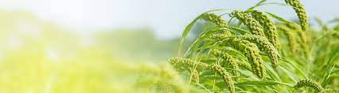
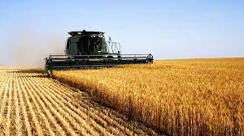
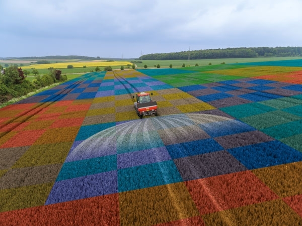

Agricultura este maica neamului omenesc care hrănește fii sai.

Satul Brînza este o mică localitate la sudul Moldovei așezată pe malul stâng al Prutului.
Unde micii agricultori își dezvolta micile afaceri.Locuitorii satului Brînza se ocupa
cu Viticultura ,Agrofitotehnia, Apicultura, Zootehnia, Horticultura, etc.

Introducere în agricultură
Sectorul agricoleste unul dintre principalii utilizatori din
Europa și, prin urmare, contribuie la modelarea peisajelor rurale. Acesta
are diverse efecte directe și indirecte asupra mediului și depinde, la
rândul său, de resursele naturale.

Obiectivele noastre
1.Creșterea suprafeței de teren
2.Creșterea producției
3.Găsirea mai multor parteneri de afaceri
4.Procurare mai multor utilaje agricole
5.Creșterea vânzărilor
Recomandate
La Slobozia Mare a fost deschisă cea mai mare piață din sudul Moldovei.
Riscul valurilor de caldura si singularitatilor termice pozitive in Republica Moldova.
Plantatie de citina alba la sudul Moldovei,afacere profitabila a lui Rodion Sobcenco.